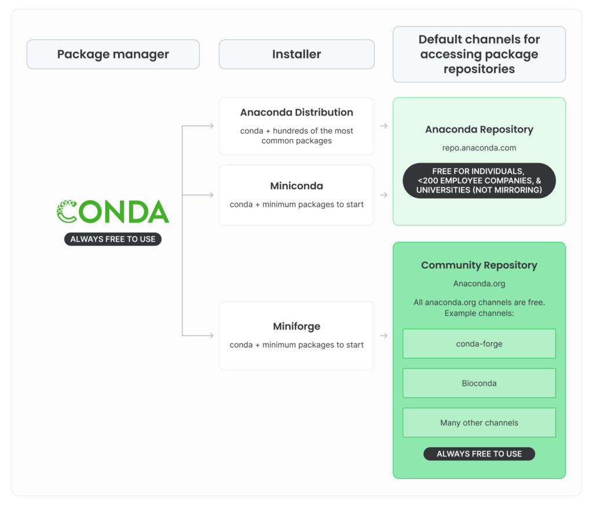

Getting started#
Quick start#
- Install QuPath, ABBA and conda.
- Create an environment :
- Activate it :
- Install
cuistoIf you want to build the doc locally : - Check the Examples section !
Slow start#
Tip
If all goes well, you shouldn't need any admin rights to install the various pieces of software used before cuisto.
Important
Remember to cite all softwares you use ! See Citing.
QuPath#
QuPath is an "open source software for bioimage analysis". You can install it from the official website : https://qupath.github.io/.
The documentation is quite clear and comprehensive : https://qupath.readthedocs.io/en/stable/index.html.
This is where you'll create QuPath projects, in which you'll be able to browse your images, annotate them, import registered brain regions and find objects of interests (via automatic segmentation, thresholding, pixel classification, ...). Then, those annotations and detections can be exported to be processed by cuisto.
Aligning Big Brain and Atlases (ABBA)#
This is the tool you'll use to register 2D histological sections to 3D atlases. See the dedicated page.
Python virtual environment manager (conda)#
The cuisto package is written in Python. It depends on scientific libraries (such as NumPy, pandas and many more). Those libraries need to be installed in versions that are compatible with each other and with cuisto. To make sure those versions do not conflict with other Python tools you might be using (deeplabcut, abba_python, ...), we will install cuisto and its dependencies in a dedicated virtual environment.
conda is a software that takes care of this. It comes with a "base" environment, from which we will create and manage other, project-specific environments. It is also used to download and install python in each of those environments, as well as third-party libraries. conda in itself is free and open-source and can be used freely by anyone.
It is included with the Anaconda distribution, which is subject to specific terms of service, which state that unless you're an individual, a member of a company with less than 200 employees or a member of an university (but not a national research lab) it's free to use, otherwise, you need to pay a licence. conda, while being free, is by default configured to use the "defaults" channel to fetch the packages (including Python itself), a repository operated by Anaconda, which is, itself, subject to the Anaconda terms of service.
In contrast, conda-forge is a community-run repository that contains more numerous and more update-to-date packages. This is free to use for anyone. The idea is to use conda directly (instead of Anaconda graphical interface) and download packages from conda-forge (instead of the Anaconda-run defaults). To try to decipher this mess, Anaconda provides this figure :

Furthermore, the "base" conda environment installed with the Anaconda distribution is bloated and already contains tons of libraries, and tends to self-destruct at some point (eg. becomes unable to resolve the inter-dependencies), which makes you unable to install new libraries nor create new environments.
This is why it is highly recommended to install Miniconda instead, a minimal installer for conda, and configure it to use the free, community-run channel conda-forge, or, even better, use Miniforge which is basically the same but pre-configured to use conda-forge. The only downside is that will not get the Anaconda graphical user interface and you'll need to use the terminal instead, but worry not ! We got you covered.
- Download and install Miniforge (choose the latest release for your system). During the installation, choose to install for the current user, add conda to PATH and make python the default interpreter.
- Open a terminal (PowerShell in Windows). Run : This will activate conda and its base environment whenever you open a new PowerShell window. Now, when opening a new PowerShell (or terminal), you should see a prompt like this :
Tip
If Anaconda is already installed and you don't have the rights to uninstall it, you'll have to use it instead. You can launch the "Anaconda Prompt (PowerShell)", run conda init. Open a regular PowerShell window and run conda config --add channels conda-forge, so that subsequent installations and environments creation will fetch required dependencies from conda-forge.
Installation#
This section explains how to actually install the cuisto package.
The following commands should be run from a terminal (PowerShell). Remember that the -c conda-forge bits are not necessary if you installed conda with the miniforge distribution.
- Create a virtual environment with python 3.12 :
- We need to install it inside the
cuisto-envenvironment we just created. First, you need to activate thecuisto-envenvironment : Now, the prompt should look like this : This means that Python packages will now be installed in thecuisto-envenvironment and won't conflict with other toolboxes you might be using. - Then, we use
pipto installcuisto.pipwas installed with Python, and will fetch the latest release from PyPI. - Get a copy of the
cuistoSource code .zip package, from the Releases page, to have access to all the utility scripts in thescripts/folder.
cuisto is now installed inside the cuisto-env environment and will be available in Python from that environment !
Tip
You can run pip install cuisto --upgrade from the cuisto-env environment to update the package.
If you already have registered data and cells in QuPath, you can export Annotations and Detections as TSV files and head to the Example section. Otherwise, check out the Guides section on the left panel.